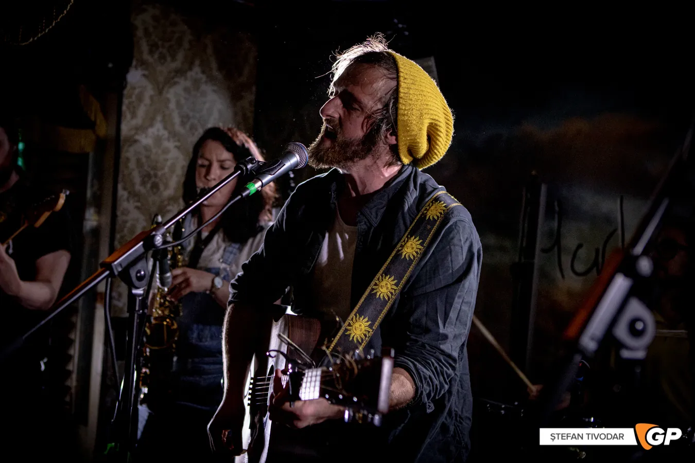

Mark's Journey
A very creative video for Mark's breakthrough hit song "Catch a Tear" was shot by Kodaline's Jason Boland in 2021. The follow-up single "All In Your Head" (2022) was recorded in U2's Windmill Lane and features Rick Jupp, Elbow's drummer, behind an enthralling, hook-filled anthem. Both of the singles were popularised on Irish and British radio, where they were included in live performances and interviews on BBC Scotland and RTÉ Radio 1.
Following up on this accomplishment, Mark received an invitation to be a featured guest on The Recording Academy/GRAMMYs' Reimagined At Home series, which asks musicians to record their favourite GRAMMY-winning song, shortly before the end of 2022. Mark performed an outstanding and moving piano rendition of Fleetwood Mac's "The Chain," complete with a brass band and evocative percussion. The Lumineers, Sam Fender's band, and guitarist Lindsey Buckingham of Fleetwood Mac were all drawn to the video when it garnered over 10,000 views in a single day.
In addition to his debut headline event in London, his new EP "Brighter Side Of Sorrow" will be released this summer. Many more live dates will also be revealed.
